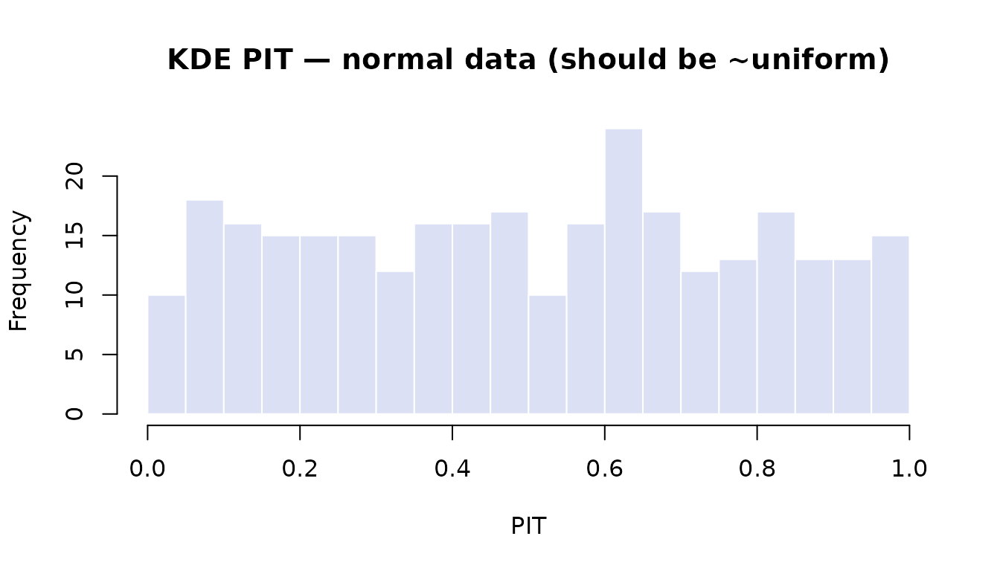
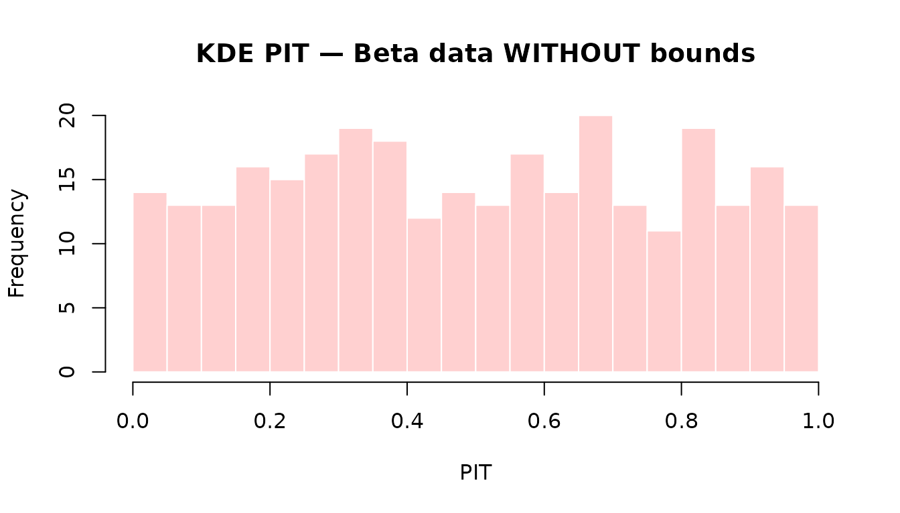
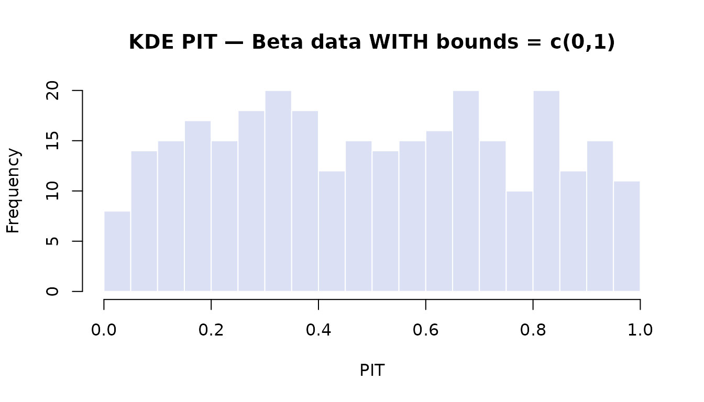
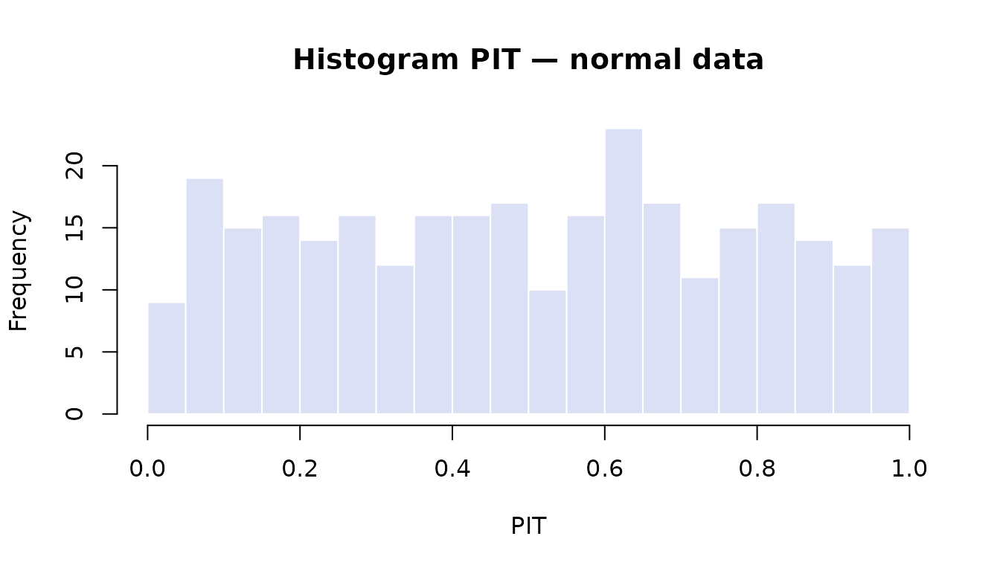
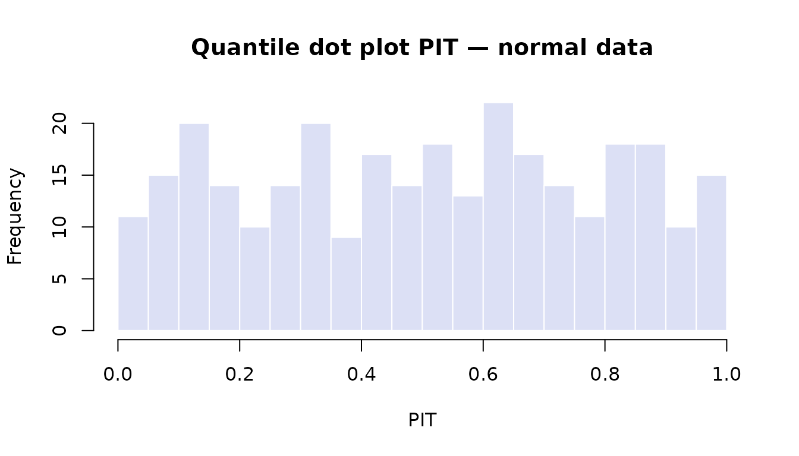
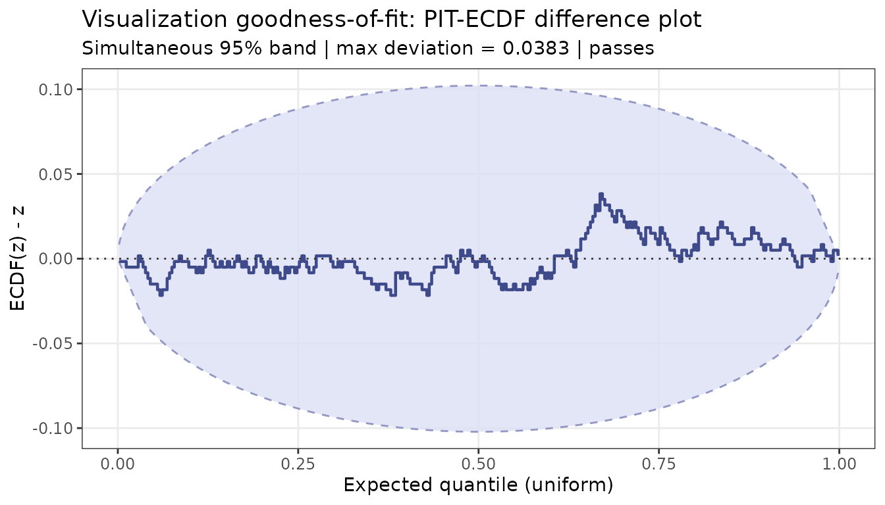
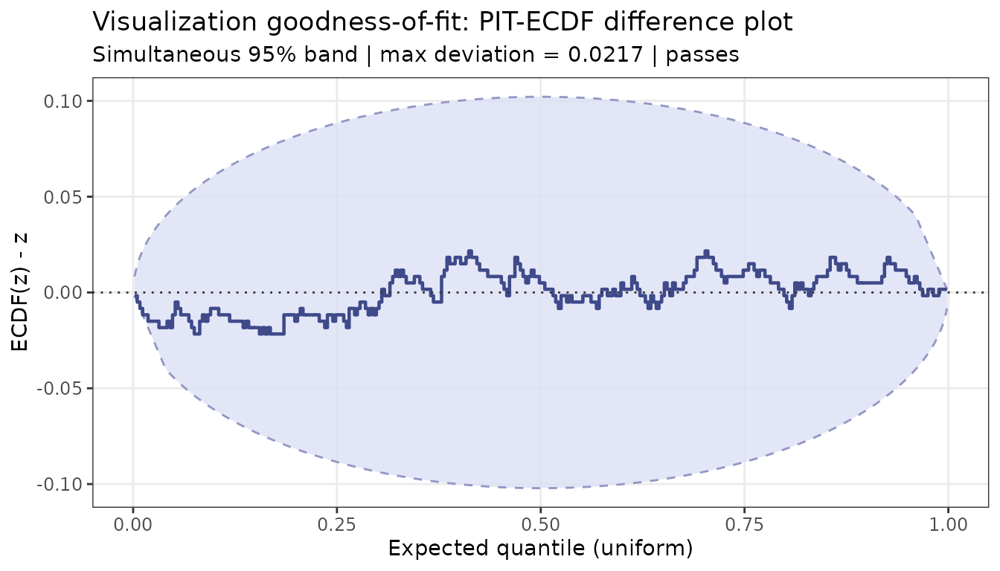
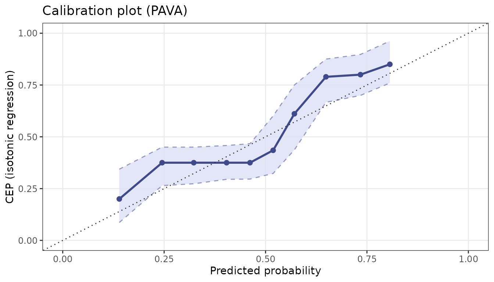
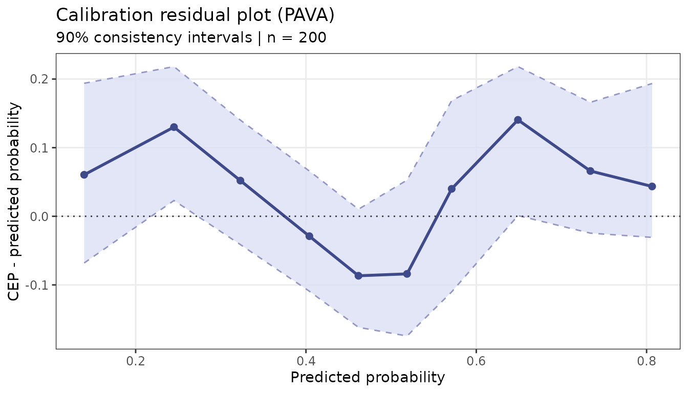

Introduction to ppcviz
ppcviz-intro.RmdOverview
ppcviz implements the novel diagnostic tools from:
Säilynoja, T., Johnson, A., Martin, R., & Vehtari, A. (2025). Recommendations for visual predictive checks in Bayesian workflow. arXiv:2503.01509.
The core idea is: treat the visualization itself as a density estimator and test whether it faithfully represents the data. A beautiful plot that misrepresents the distribution is worse than no plot at all.
Part 1: Data Property Detection
Before choosing a plot, diagnose your data.
Discreteness detection
# Continuous normal — nothing flagged
detect_discrete(rnorm(300))
#> Discreteness / point-mass check
#> --------------------------------
#> Observations : 300
#> Unique values: 300 (ratio 1.000)
#> Threshold : 2.0%
#>
#> Result: No point masses detected. Data appears continuous.
# Poisson counts
detect_discrete(rpois(300, lambda = 4))
#> Discreteness / point-mass check
#> --------------------------------
#> Observations : 300
#> Unique values: 12 (ratio 0.040)
#> Threshold : 2.0%
#>
#> Result: DISCRETE data detected.
#> Values with relative frequency > threshold:
#> value = 1 (freq = 4.0%)
#> value = 2 (freq = 15.7%)
#> value = 3 (freq = 18.7%)
#> value = 4 (freq = 21.7%)
#> value = 5 (freq = 15.7%)
#> value = 6 (freq = 9.7%)
#> value = 7 (freq = 4.0%)
#> value = 8 (freq = 6.0%)
#> Recommendation: Use ppc_rootogram() or ppc_bars();
#> avoid KDE-based plots.
# Zero-inflated normal
y_mixed <- c(rep(0, 80), rnorm(220, mean = 2))
detect_discrete(y_mixed)
#> Discreteness / point-mass check
#> --------------------------------
#> Observations : 300
#> Unique values: 221 (ratio 0.737)
#> Threshold : 2.0%
#>
#> Result: MIXED / ZERO-INFLATED data detected.
#> Point masses with relative frequency > threshold:
#> value = 0 (freq = 26.7%)
#> Recommendation: Separate discrete/continuous components;
#> consider ppc_rootogram() or a hurdle/mixture model check.Boundary detection
# Unbounded
detect_bounds(rnorm(300))
#> Boundary detection check
#> ------------------------
#> Data range: [-2.941, 2.385]
#>
#> Lower bound: none detected
#> Upper bound: none detected
#>
#> Result: No natural boundaries detected. Data appears UNBOUNDED.
#> Recommendation: Standard ppc_dens_overlay() should be appropriate.
# Non-negative
detect_bounds(rexp(300))
#> Boundary detection check
#> ------------------------
#> Data range: [0.003238, 5.776]
#>
#> Lower bound: 0
#> Upper bound: 5.776
#>
#> Result: Data appears NON-NEGATIVE (lower bound = 0).
#> Recommendation: Use ppc_dens_overlay(bounds = c(0, Inf)) or
#> ppc_ecdf_overlay().
# Proportions [0, 1]
detect_bounds(rbeta(300, 2, 5))
#> Boundary detection check
#> ------------------------
#> Data range: [0.02019, 0.7697]
#>
#> Lower bound: 0
#> Upper bound: 1
#>
#> Result: Data appears to be PROPORTIONS bounded to [0, 1].
#> Recommendation: Use ppc_dens_overlay(bounds = c(0, 1)) or
#> ppc_ecdf_overlay() to avoid boundary bias in KDE.Part 2: Visualization PIT Values
The visualization PIT (Probability Integral Transform) quantifies how well a chosen plot type represents the empirical distribution. If the PIT values are uniform on , the visualization is faithful; non-uniformity reveals where the plot is misleading.
KDE PIT
y <- rnorm(300)
pit <- pit_kde(y)
hist(pit, breaks = 25, main = "KDE PIT — normal data (should be ~uniform)",
xlab = "PIT", col = "#DCE0F5", border = "white")
Bounded data
Without a boundary correction, a KDE on data leaks density outside the valid range, causing systematic non-uniformity:
y_beta <- rbeta(300, 2, 5)
# Without bounds — PIT will pile up near 0 and 1
pit_bad <- pit_kde(y_beta)
hist(pit_bad, breaks = 25, main = "KDE PIT — Beta data WITHOUT bounds",
xlab = "PIT", col = "#FFD0D0", border = "white")
# With reflection correction — should be ~uniform
pit_ok <- pit_kde(y_beta, bounds = c(0, 1))
hist(pit_ok, breaks = 25, main = "KDE PIT — Beta data WITH bounds = c(0,1)",
xlab = "PIT", col = "#DCE0F5", border = "white")
Histogram PIT
pit_h <- pit_histogram(y)
hist(pit_h, breaks = 25, main = "Histogram PIT — normal data",
xlab = "PIT", col = "#DCE0F5", border = "white")
Quantile dot plot PIT
pit_q <- pit_qdotplot(y, n_quantiles = 50L)
hist(pit_q, breaks = 25, main = "Quantile dot plot PIT — normal data",
xlab = "PIT", col = "#DCE0F5", border = "white")
Part 3: Goodness-of-Fit for Visualizations
viz_gof() tests whether the PIT values are consistent
with uniformity using simultaneous ECDF confidence bands
(Säilynoja, Bürkner & Vehtari 2022).
# Normal data with KDE — should pass
result_pass <- viz_gof(pit_kde(y), n_sim = 500)
print(result_pass)
#> [OK] Visualization GoF test PASSES (prob = 95%, max deviation = 0.0383)
#> The visualization appears faithful to the data distribution.
plot(result_pass)
# Beta data without boundary correction — may fail
result_fail <- viz_gof(pit_kde(y_beta), n_sim = 500)
print(result_fail)
#> [OK] Visualization GoF test PASSES (prob = 95%, max deviation = 0.0217)
#> The visualization appears faithful to the data distribution.
plot(result_fail)
Convenience wrapper
check_viz() combines PIT computation and the GoF test
and prints a human-readable verdict:
check_viz(y, method = "kde")
#> KDE density plot is APPROPRIATE for this data. (max ECDF deviation = 0.0383 is
#> within the 95% simultaneous band)
check_viz(y_beta, method = "kde")
#> KDE density plot is APPROPRIATE for this data. (max ECDF deviation = 0.0217 is
#> within the 95% simultaneous band)
check_viz(y_beta, method = "kde", bounds = c(0, 1))
#> KDE density plot is APPROPRIATE for this data. (max ECDF deviation = 0.0350 is
#> within the 95% simultaneous band)Part 4: PAVA Calibration Plots
These plots are the paper’s main contribution for binary and
discrete outcomes. They do not exist in
bayesplot.
Binary calibration
n <- 200
true_p <- plogis(rnorm(n))
y_bin <- rbinom(n, 1, true_p)
yrep <- do.call(rbind, lapply(seq_len(100), function(i) rbinom(n, 1, true_p)))
# Well-calibrated predictions — should be near the diagonal
ppc_calibration(y_bin, yrep, n_boot = 200)
ppc_calibration_residual(y_bin, yrep, n_boot = 200)
Part 5: Automatic Recommender
recommend_ppc() combines all the detection and testing
logic to suggest the most appropriate bayesplot (or
ppcviz) function for your data:
recommend_ppc(rnorm(300))
#> PPC plot recommendation
#> =======================
#> Data type: CONTINUOUS
#>
#> Reason:
#> Data appears CONTINUOUS and UNBOUNDED. ppc_dens_overlay() is
#> generally appropriate. Provide `yrep` to additionally test KDE
#> faithfulness.
#>
#> RECOMMENDED:
#> + ppc_dens_overlay()
#> + ppc_ecdf_overlay()
recommend_ppc(rexp(300))
#> PPC plot recommendation
#> =======================
#> Data type: CONTINUOUS
#>
#> Reason:
#> Data appears NON-NEGATIVE with a hard lower bound at 0. Use
#> boundary-corrected KDE with bounds = c(0, Inf) to prevent
#> density mass at negative values.
#>
#> RECOMMENDED:
#> + ppc_dens_overlay(bounds = c(0, Inf))
#> + ppc_ecdf_overlay()
#>
#> AVOID:
#> - ppc_dens_overlay() # without bounds
recommend_ppc(rbeta(300, 2, 5))
#> PPC plot recommendation
#> =======================
#> Data type: CONTINUOUS
#>
#> Reason:
#> Data appears to be PROPORTIONS bounded to [0, 1]. Use
#> boundary-corrected KDE with bounds = c(0, 1) to avoid density
#> leakage outside the valid range.
#>
#> RECOMMENDED:
#> + ppc_dens_overlay(bounds = c(0, 1))
#> + ppc_ecdf_overlay()
#>
#> AVOID:
#> - ppc_dens_overlay() # without bounds
recommend_ppc(rpois(300, lambda = 3))
#> PPC plot recommendation
#> =======================
#> Data type: DISCRETE
#>
#> Reason:
#> Data is DISCRETE with 11 unique values. KDE-based density plots
#> will misrepresent the distribution. Use rootogram or bar plots
#> for small discrete spaces, or ECDF-based plots for larger ones.
#>
#> RECOMMENDED:
#> + ppc_rootogram()
#> + ppc_bars()
#>
#> AVOID:
#> - ppc_dens_overlay()
#> - ppc_dots()
recommend_ppc(c(rep(0, 70), rnorm(230, mean = 2)))
#> PPC plot recommendation
#> =======================
#> Data type: MIXED
#>
#> Reason:
#> Data appears MIXED / ZERO-INFLATED. Point masses were detected
#> alongside a continuous bulk. Separate the discrete and
#> continuous components, or use ppc_rootogram() for count-like
#> data.
#>
#> RECOMMENDED:
#> + ppc_rootogram()
#> + ppc_ecdf_overlay(discrete = TRUE)
#>
#> AVOID:
#> - ppc_dens_overlay()
recommend_ppc(sample(0:1, 300, replace = TRUE))
#> PPC plot recommendation
#> =======================
#> Data type: BINARY
#>
#> Reason:
#> Data is BINARY (only 0 and 1). Use PAVA calibration plots to
#> assess probability calibration. Density-based and ECDF plots
#> are not appropriate for binary outcomes.
#>
#> RECOMMENDED:
#> + ppc_calibration()
#> + ppc_calibration_residual()
#>
#> AVOID:
#> - ppc_dens_overlay()
#> - ppc_ecdf_overlay()